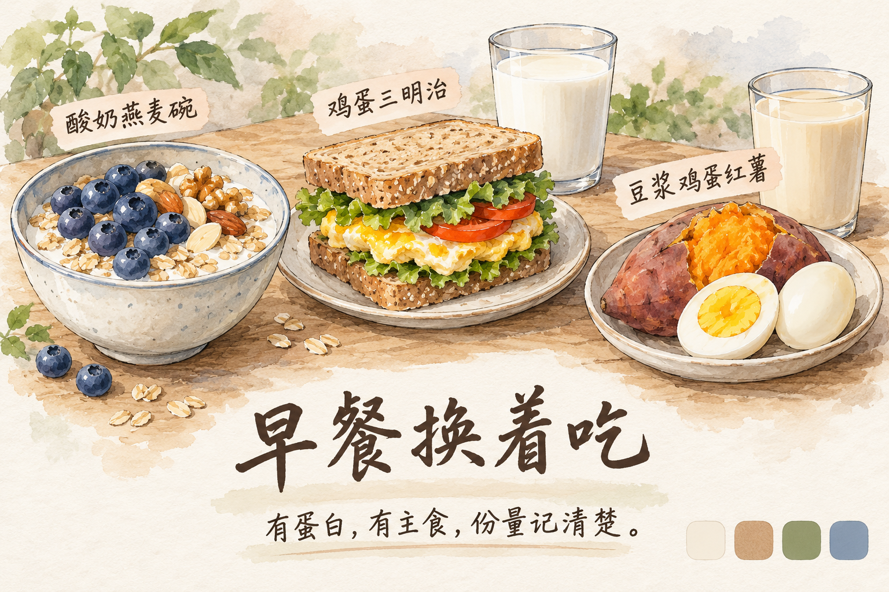

早餐
酸奶燕麦碗
约 440 千卡 / 蛋白质 30g燕麦 50g（干重）· 高蛋白原味酸奶 200g · 蓝莓 100g · 坚果 10g
- 燕麦加水煮软或用热水泡开，稍放凉。加水不额外增加热量；若改用牛奶，要另计用量。
- 拌入酸奶，铺上蓝莓和称好的坚果。冷吃可以前晚做好，立即冷藏。
- 酸奶按每 100g 约 10g 蛋白质估算；普通酸奶不能等量替代后仍沿用本卡蛋白质。
约 5～8 分钟；蓝莓可换草莓，按实际重量与标签记录。
从每天约 2000 千卡起步，把蛋白质、主食和蔬菜吃完整。每份写清用量，按两周趋势调整。

先确认适用前提：沿用原方案的 2000 千卡、155g 蛋白质和 75kg 阶段目标，按健康成年男性的一般情况完善。当前身高、年龄、最新体重和病史尚未核实，75kg 是否合适及实际热量需求仍需结合这些信息判断。
体重包含脂肪、肌肉、水分和肠道内容物。先建立饮食节奏，同时形成温和的热量缺口。
刚改变碳水、盐分和进食量时，体重可能较快变化，其中有水分、糖原和肠道内容物的变化，不代表等量脂肪已经消失。持续减脂依赖长期能量平衡；无需脱水、祛湿茶或排毒项目。正常喝水、规律吃主食和适量用盐即可。
持续几天不缓解的肿胀、单侧腿突然肿痛或发红，应及时就医；若同时气短或胸痛，需要紧急就医。不能根据外观自行认定只是高盐或久坐。[4]
原方案把日消耗估为 2600 千卡；这个估计未重新测量。2000 千卡先作为起始值，不能当成你的精确处方。
155g 蛋白质 + 215g 碳水 + 58g 脂肪折算约 2002 千卡。宏量是参考组合，无需每天精准到 1g；食谱受食材、品牌和做法影响，数值也只能估算。
这是沿用的起始参考。健康运动人群的蛋白质需求常在约 1.4～2.0g/kg/天范围，减脂力量训练时可根据情况选择偏高的一侧；并非所有人都必须吃 155g。先核对最新体重，再定个人范围。[2]
所有食谱的肉、鱼、虾、薯类和蔬菜都按生的可食净重；米、面、燕麦按干重。酸奶、牛奶、面包、坚果按实际食用量或包装标签。鸡蛋按约 50g 可食部分/个估算。生重和熟重不要混用。
前三周把主食、蛋白质和油称准，之后才适合用手掌、饭碗估份量。
| 情形 | 正确做法 | 常见混淆 |
|---|---|---|
| 煮米饭 | 先称干米。70g 干米煮后可能约 175～210g，吸水量不同会变化。 | 70g 干米 ≠ 70g 熟饭；熟饭重量只是参考。 |
| 一次做多份 | 称全部生食材与用油，做好后均匀分装。700g 干米分成 10 等份，每份按 70g 干米记。 | 不要把做熟后缩水的肉当成热量减少了。 |
| 多人共享菜 | 记录整锅肉、油和主食；尽量分匀蛋白质，再估你吃的比例。 | 共享菜的油很难精确，记录一个合理范围即可。 |
| 读包装标签 | 每 100g 的值乘以食用克数÷100；若标的是 kJ，除以 4.184 得到千卡。 | “无糖”和“低脂”都不等于零热量。 |
每餐先安排一份明确的蛋白质、充足蔬菜和适量主食；手掌、拳头只做粗估。它们无法证明你吃到了 155g 蛋白质，也不能把每次不同大小的“一碗饭”当成固定热量。
这版示范约 2020 千卡、155g 蛋白质，接近起始目标。餐次时间是示例，晚上训练也可以移动加餐。
| 餐次 | 内容 | 热量 | 蛋白质 |
|---|---|---|---|
| 早餐 7:30 | 酸奶燕麦碗 燕麦 50g（干重）· 高蛋白原味酸奶 200g · 蓝莓 100g · 坚果 10g | 约 440 千卡 | 30g |
| 午餐 12:30 | 鸡胸糙米蔬菜碗 鸡胸净肉 200g（生重）· 糙米 70g（干重）· 蔬菜 250g · 油 8g · 少量调味料 | 约 650 千卡 | 55g |
| 加餐 16:00 | 酸奶香蕉加餐 高蛋白原味酸奶 200g + 香蕉可食部分 120g + 坚果 10g | 约 300 千卡 | 23g |
| 晚餐 19:00 | 黑椒牛肉红薯餐 瘦牛肉 180g（生重）· 红薯 250g（生重）· 洋葱和彩椒等蔬菜共 250g · 油 8g | 约 630 千卡 | 47g |
| 合计 | 作息可移动，保留总份量 | 约 2020 千卡 | 约 155g |
16:00 的香蕉可以留到训练前 60～90 分钟，酸奶按胃肠耐受分开吃；训练后吃正常晚餐即可。离上一餐很久时，先吃容易消化的小份主食。没有必须在 30 分钟内喝蛋白粉的要求。
先确认午餐和蛋白质没漏吃。把计划内的加餐提前，增加蔬菜或适量水果；如果持续饥饿、疲惫或训练下滑，复盘总热量。乳清只是方便食品，不是必买项；临时多加一份也要记入当天总量。
每天约 1990～2100 千卡、150～161g 蛋白质。点菜名可跳到食谱，按对应整份用量做，不能只抄菜名。
| 星期 | 早餐 | 午餐 | 晚餐 | 加餐 | 全天估算 |
|---|---|---|---|---|---|
| 周一 | 酸奶燕麦碗 | 鸡胸糙米蔬菜碗 | 黑椒牛肉红薯餐 | 酸奶香蕉加餐 | 约 2020 千卡 155g 蛋白质 |
| 周二 | 全麦鸡蛋三明治 | 三文鱼红薯餐 | 番茄虾仁全麦意面 | 酸奶香蕉加餐 | 约 2060 千卡 150g 蛋白质 |
| 周三 | 豆浆鸡蛋红薯 | 轻咖喱鸡胸杂蔬 | 清蒸白鱼杂粮饭 | 牛奶鸡蛋加餐 | 约 2070 千卡 160g 蛋白质 |
| 周四 | 酸奶燕麦碗 | 黑椒牛肉红薯餐 | 鸡胸糙米蔬菜碗 | 酸奶香蕉加餐 | 约 2020 千卡 155g 蛋白质 |
| 周五 | 全麦鸡蛋三明治 | 三文鱼红薯餐 | 轻咖喱鸡胸杂蔬 | 酸奶香蕉加餐 | 约 2100 千卡 151g 蛋白质 |
| 周六 | 豆浆鸡蛋红薯 | 番茄虾仁全麦意面 | 黑椒牛肉红薯餐 | 酸奶香蕉加餐 | 约 2060 千卡 153g 蛋白质 |
| 周日 | 酸奶燕麦碗 | 清蒸白鱼杂粮饭 | 鸡胸糙米蔬菜碗 | 牛奶鸡蛋加餐 | 约 1990 千卡 161g 蛋白质 |
先保持每天相似总热量和蛋白质，休息日也需要恢复，不用把主食全部砍掉。训练日可以把同一份主食或水果移到训练前后，整天总量不变。两周趋势合适就先不改。
热量包含卡片列出的主食、食材和油；不是只计算那盘肉。品牌、食材肥瘦和实际做法不同，结果可能相差约 10～20%。

高蛋白酸奶示范按每 100g 约 10g 蛋白质、每 100g 约 65～70 千卡；无糖豆浆按每 100ml 约 3g 蛋白质估算。若你购买的产品差很多，需要按标签重算，不能套用相同营养数值。
燕麦 50g（干重）· 高蛋白原味酸奶 200g · 蓝莓 100g · 坚果 10g
约 5～8 分钟；蓝莓可换草莓，按实际重量与标签记录。
全麦面包 80g · 鸡蛋 2 个 · 脱脂牛奶 250ml · 生菜 50g · 番茄 100g · 油 3g
约 10 分钟；乳糖不耐受可用无乳糖奶，核对蛋白质。
无糖豆浆 400ml · 鸡蛋 2 个 · 红薯 250g（生重）· 番茄 100g
约 5 分钟取餐，蒸红薯另需时间；红薯计入主食。
鸡胸净肉 200g（生重）· 糙米 70g（干重）· 蔬菜 250g · 油 8g · 少量调味料
约 20 分钟，米饭可提前煮；无去皮鸡胸时可换同量去皮鸡腿肉，重算脂肪与热量。
三文鱼净肉 180g（生重）· 红薯 200g（生重）· 蔬菜 250g · 油 5g · 柠檬少量
约 20～25 分钟；用白鱼替换会明显减少脂肪与热量，不是完全等价。
瘦牛肉 180g（生重）· 红薯 250g（生重）· 洋葱和彩椒等蔬菜共 250g · 油 8g
约 15～20 分钟；牛肉部位影响热量较大，尽量选瘦肉。
鸡胸 200g（生重）· 糙米 50g（干重）· 土豆 100g（生重）· 其他蔬菜 200g · 咖喱块 10g · 油 5g
约 25 分钟；咖喱粉可替代咖喱块，但总热量需重新估算。
全麦意面 80g（干重）· 去壳虾仁 200g（生重）· 番茄 300g · 洋葱 100g · 油 8g
约 20 分钟；可用相近蛋白量的鸡胸替换虾仁。
白鱼去骨净肉 220g（生重）· 杂粮米 60g（干重）· 蔬菜 250g · 油 8g · 姜葱少量
约 20 分钟；鱼种脂肪差异大，三文鱼不能按本卡直接套算。
高蛋白原味酸奶 200g + 香蕉可食部分 120g + 坚果 10g
约 300 千卡 / 蛋白质 23g
脱脂牛奶 250ml + 熟鸡蛋 2 个 + 苹果可食部分 150g
约 310 千卡 / 蛋白质 22g
下面是近似换法，蛋白质接近不代表热量和脂肪完全相同。素食、过敏或明显不耐受时，需要单独重排。
| 要替换什么 | 近似选择 | 记住这个差别 |
|---|---|---|
| 约 40g 蛋白质 | 生鸡胸约 180g / 去壳生虾约 200g / 部分白鱼净肉约 200～220g | 依食材实际蛋白含量调整，瘦肉与肥肉的脂肪不同。 |
| 肉类换豆制品 | 看豆腐标签；若每 100g 含 8g 蛋白质，约 500g 才提供 40g 蛋白质。 | 豆腐含水量差异大，150g 豆腐不能默认等同 150g 肉。 |
| 一份主食 | 干米 50g，或红薯约 200g，或土豆约 230g，或全麦面包约 70g | 热量粗略接近，不保证碳水、纤维完全等价；薯类仍按生重。 |
| 乳清蛋白粉 | 按标签计量；常见 30g 粉约 20～25g 蛋白质 | 不必购买；普通食物能完成目标就够，不以“一勺”替代克数。 |
清单按上面的七天菜单合计，是一个人的量；不是人人相同的固定采购任务。

周日准备周一至周三的主要食材，后半周原料冷冻；周三补做后半周的餐。提前冷藏解冻，不在桌上放一整天，不用热水长时间泡肉。饭盒标制作日期，吃过的剩菜不要混回新鲜餐盒。
外食的油和份量难精确，先把结构点对，再记录合理估计。不靠次日断食“惩罚”自己。
先排除水分波动和记录误差，再改一个变量。前两周适应期不拿掉秤速度作减热量依据。
| 观察结果 | 先检查 | 下一步 |
|---|---|---|
| 平均每周降约 0.4～0.8kg，精神和训练正常 | 晨重口径相同；腰围也有趋势。 | 继续原方案，不因为想更快就继续减少。 |
| 两三周平均体重、腰围都不变 | 油和零食漏记？外食变多？步数减少？便秘或高盐影响？ | 先修正记录和执行。仍无变化，可每天少约 100～150 千卡，或把步数在当前基础上加约 1000～2000；二选一，观察两周。 |
| 持续掉得过快，或疲劳、饥饿、训练明显下降 | 排除前期水分变化、睡眠不足和额外运动太多。 | 可加约 100～200 千卡，并减少额外高强度运动；持续不适时寻求专业评估。 |
| 体重不动但腰围下降、力量稳定 | 周平均有无改变，测量是否一致。 | 通常先继续观察，不急着进一步压低热量。 |
接着看 健身训练计划：四天训练、动作与肌群图、热身、加重和恢复。饮食负责能量与营养，力量训练提供保留肌肉的刺激。